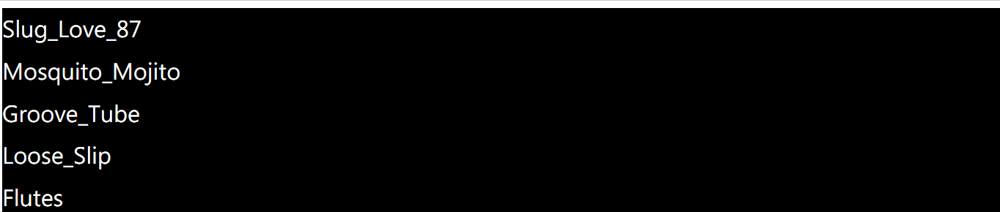
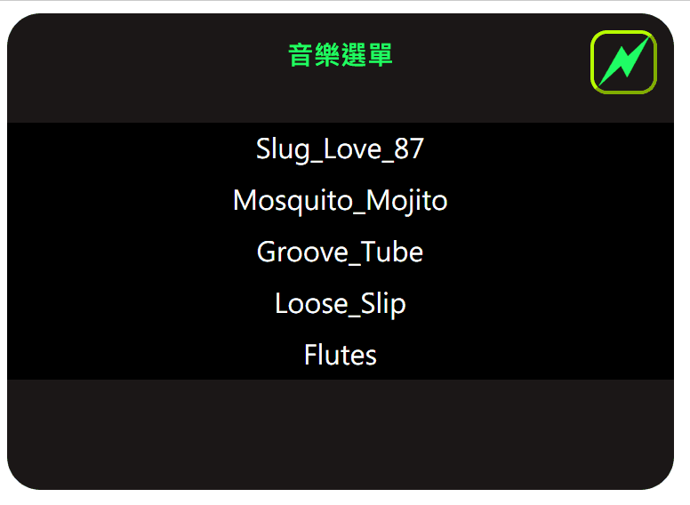

此範例程式碼同步於 CodePen 及 GitHub 。
本文教學如何使用 JavaScript 實作簡易音樂播放器，首先建立一個 music 資料夾並將要播放的影音檔放至此資料夾，此範例音樂來源為 youtube Audio Library 無版權音樂。
製作歌曲選單列表 首先將 music 資料夾內的音樂檔名列出，利用 ul 及 li 來製作條列式選單：
1 2 3 4 5 6 7 <ul id ="musicSources" > <li > Slug_Love_87</li > <li > Mosquito_Mojito</li > <li > Groove_Tube</li > <li > Loose_Slip</li > <li > Flutes</li > </ul >
將 ul 設定 margin-left 與 padding-left 為 0 來取消 ul 左邊的外距與內距，防止 ul 內縮； li 加上 list-style-type:none; 來取消符號顯示。
1 2 3 4 5 6 7 8 9 10 11 12 13 14 15 16 17 ul { background-color : rgb (0 , 0 , 0 ); margin-left : 0 ; padding-left : 0 ; color : #ffffff ; } li { list-style-type : none; line-height : 30px ; border-bottom : 1px solid rgb (0 , 0 , 0 ); } li :hover { background-color : rgb (71 , 71 , 71 ); cursor : pointer; }
以上語法會產生如下表格：

事件委派（ Event Delegation） 如果要替每個 li 都綁定 click event hander ，可以使用 for 迴圈來綁定，也就是有幾個 li 就要加幾次 addEventListener ，之後在新增歌曲還要在綁定一次事件，讓程式碼複雜化。
過去有介紹過瀏覽器事件的運作原理: DOM - 事件處裡及傳遞機制 ，我們可以將 click 事件綁定在 parent 上，藉由 Event Bubbling 來傳遞給 child ，而非直接將事件綁定在 child 上，可以減少監聽器的數量，只要判斷目標(e.target)是哪個項目再去執行即可。
1 2 3 4 5 6 7 8 9 10 11 12 13 14 15 16 17 18 19 20 21 window .addEventListener('load' , () => { let musicSources = document .querySelector('#musicSources' ); musicSources.addEventListener('click' , musicTarget = (e ) => { if (e.target.tagName.toLowerCase() === 'li' ) { if (document .querySelector(".musicSpan" )) { document .querySelector(".musicSpan" ).remove(); } if (document .querySelector("audio" )) { document .querySelector("audio" ).remove(); } let target = e.target; const pn = target.innerText; let span = document .createElement('span' ) span.className = 'musicSpan' ; span.innerHTML = '4' ; target.appendChild(span); playMusic(pn); } }); })
我們將 click 事件綁定在 id 為 musicSources 的 ul 上，再利用 e.target.tagName 判斷是不是 li 就可以了，讓程式碼簡潔許多，之後如果新增歌曲一樣會綁定 click 事件。
當按下歌曲時，歌曲前方顯示一個三角形符號 這裡使用 Webdings 字型來產生三角形符號。首先指定字型 font-family: Webdings; ，輸入 4 就是使用三角形符號，在將文字放在 span 內即可。
1 2 3 4 5 6 7 let target = e.target; const pn = target.innerText; let span = document .createElement('span' ) span.className = 'musicSpan' ; span.innerHTML = '4' ; target.appendChild(span); playMusic(pn);
播放音樂 建立 audio 元件並指定路徑來源為 music 資料夾：
1 2 3 4 5 6 7 function playMusic (a ) let myAudio = document .createElement('audio' ); myAudio.setAttribute("src" , "music/" + a + ".mp3" ); myAudio.setAttribute("controls" , "controls" ); bottom.appendChild(myAudio); myAudio.play(); }
當點擊歌曲時就新增一個 audio 元素，點擊其它歌曲時再將原本的 audio 元素移除，暫停和跳轉可以使用 audio 內建的功能。
隨機播放 右上角建立隨機播放按鈕，同樣使用 Webdings 字型來產生樣式：
1 <span id ="random" title ="隨機播放" onclick ="randomPlay()" > ~</span >
當點擊按鈕呼叫 randomPlay() 函式，使用 random() 來產生 0~4的整數值，將值帶入 li 標籤的 index ，接著再執行 click 事件就會執行播放音樂程式碼：
1 2 3 4 5 function randomPlay ( let num = Math .floor(Math .random() * 5 ); let randomLi = document .querySelectorAll('li' )[num]; randomLi.click(); }
完整範例執行結果：

參考文獻
JavaScript 精選16堂課：網頁程式設計實作